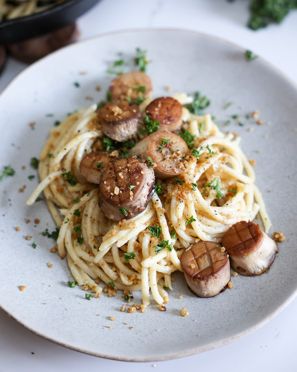

Vegan Creamy Pasta with Seared Mushroom Scallops

A Mouth-watering, Delicious Meal
It sounds like something that would be on a restaurant menu: Vegan Creamy Pasta with Seared Mushroom Scallops. But guess what? It tastes even better and it's super easy to make at home! This garlic-y dish is packed with incredible flavor and texture, and it comes together in less than 30 minutes! Unlike many vegan cream sauces, this one is 100% nut-free, but just as tasty and rich. If you've never made vegan mushroom scallops before, get ready to have your mind and taste-buds blown.
Ingredients
- 1/2 package thick spaghetti noodles
- 2 tbsp kosher salt
- 1 lb large king oyster mushrooms
- 2 tbsp vegan butter
- 1/4 cup vegan parmesan cheese
- 1/2 tsp garlic powder
- 1/2 tsp sea salt
- 2 cloves garlic, minced
- 2 tbsp extra virgin olive oil
- 1 tbsp all purpose flour
- 1 cup non-dairy milk
- 1 tbsp nutritional yeast
- 1 tbsp mellow miso
- 2 tsp lemon juice
- black pepper
- parsley
- 1/2 cup pasta water
Instructions
- Follow the instructions on the back of your pasta to cook. Cooking time will vary depending on the pasta you use.
- Cut off the tough lower 1-1.5 inch of the mushroom stalk (you can feel the difference with a light squeeze). Then slice the mushroom into 1-1.5 inch medallions. You can keep or remove the cap.
- Melt 2 tablespoons of vegan butter in a cast iron large skillet or frying pan over medium-high heat. Add the mushrooms one at a time, cut side down. Sprinkle garlic powder and sea salt over the mushrooms, and then place a heavy lid or another cast iron skillet directly over the mushrooms as they cook. This will draw out the liquid and make them extra meaty. Cook for 8 minutes on medium heat.
- Remove the heavy lid or pan, and add minced garlic to the liquid that now surrounds the mushrooms. Use tongs to flip each mushroom. The cooked side should be golden and slightly crispy around the edges.
- Continue to cook the mushrooms for another 5-10 minutes on medium heat until the mushrooms are tender and both sides are golden. The liquid will mostly evaporate, but do not let the garlic burn. Remove the mushrooms–but leave the sautéed garlic––from the pan and set aside on a plate. You may keep them hot in the oven at 250°F while you finish the sauce.
- In the same pan you cooked the mushrooms, add 2 tablespoons of extra virgin olive oil to the hot pan and garlic. Immediately add flour and let it toast on medium-low heat until slightly tan. Add the soy milk, pasta water, nutritional yeast, and miso. Stir well, and use a fork or other tool to break apart the miso paste and blend. Bring to a light simmer and stir until creamy and thick. Add ½ cup more pasta water if you want a wetter sauce. Keep in mind the pasta will absorb some of the sauce as soon as it is mixed in.
- Add the pasta to the sauce and use tongs to toss and coat every noodle. Season to taste with more salt.
- Serve the vegan creamy pasta with the seared mushroom scallops, a squeeze of fresh lemon juice, and vegan parmesan cheese. I also like to garnish with chopped fresh herbs, parsley, red pepper flakes, and black pepper